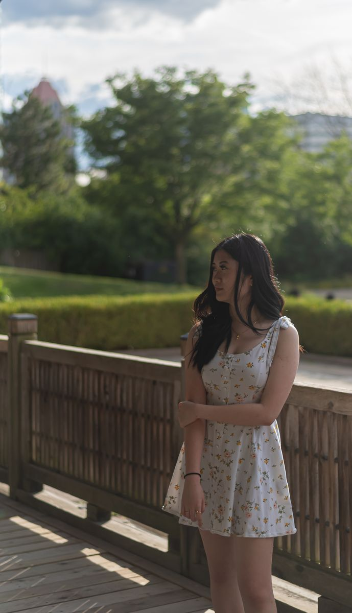

About
I design with clarity, restraint, and purpose.
I focus on structure, typography, and systems that communicate with intention. Every project is an opportunity to simplify complexity and create space for calm.
Experience
- Art direction and visual systems for independent clients
- Campaign design across print, digital, and identity touchpoints
- Collaborative work with studios, agencies, and cultural spaces




Practice
Web design, art direction, and identity-led digital systems.
Approach
Quiet visual language, strong hierarchy, and deliberate pacing.
Based in
Toronto, working across independent and collaborative projects.